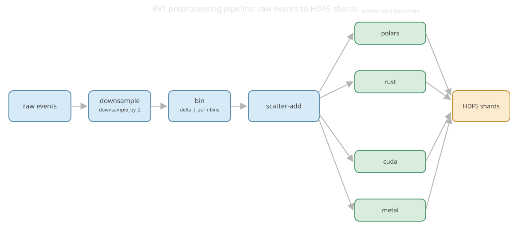

RVT Preprocessing Pipeline¶
evlib.rvt.process_sequence(...) reproduces the RVT (Recurrent Vision Transformer) stacked-histogram preprocessing pipeline: it takes a raw event sequence and writes the same on-disk layout that RVT's own preprocessing produces, so a model trained against RVT's data can consume evlib's output directly.

The pipeline has four stages: downsample (optional 2x spatial downsample, downsample_by_2), bin (assign events to nbins temporal bins per window of delta_t_us microseconds), scatter-add (accumulate binned events into a dense tensor), and write (HDF5 shards under event_representations_v2/). The scatter-add step is where the four backends differ; everything else is shared.
The four backends¶
process_sequence(..., backend=...) selects between four interchangeable scatter-add implementations:
"polars": the Polars query layer, on the CPU or on the cudf GPU engine when you passengine="gpu"or apl.GPUEngine(...). This is the default."rust": a Rust dense scatter-add kernel, CPU only."cuda": a custom CUDA scatter-add kernel on an NVIDIA GPU. It is built withnvccintolibrvt_scatter.soand loaded at runtime vialibloading, located through theEVLIB_CUDA_LIBenvironment variable."metal": a Metal/MSL scatter-add kernel for Apple Silicon, viametal-rs.
The native kernels behind "rust", "cuda" and "metal" are also exposed directly as evlib.representations_rs.stacked_histogram_dense, stacked_histogram_dense_cuda, and stacked_histogram_dense_metal.
```python notest from pathlib import Path import numpy as np from evlib.rvt import process_sequence
ev_repr_timestamps_us is the RVT representation grid (window end times, us);¶
it normally comes from evlib.data.label_preprocess.build_objframes_and_grid.¶
grid = np.load("ev_repr_timestamps_us.npy")
process_sequence( in_h5=Path("gen4_1mpx_original/val/some_sequence/some_sequence_td.h5"), out_dir=Path("out/some_sequence"), dataset="gen4", height=720, width=1280, ev_repr_timestamps_us=grid, downsample_by_2=True, backend="rust", # "polars" | "rust" | "cuda" | "metal" engine="auto", # only used by backend="polars" )
This example needs a raw gen4-format sequence (`.h5` with `/events/{t,x,y,p}`), which is not part of the tracked fixtures, so it is illustrative rather than runnable here.
## Building the GPU backends
`"polars"` and `"rust"` are always available. `"cuda"` and `"metal"` are opt-in Cargo features that need a build step:
```bash
# CUDA (NVIDIA, Linux-oriented): build the kernel source (lib/rvt_scatter.cu) into a
# shared library with nvcc, point EVLIB_CUDA_LIB at it, then build evlib with the
# cuda Cargo feature.
export EVLIB_CUDA_LIB=/absolute/path/to/librvt_scatter.so
maturin develop --features cuda
# Metal (Apple Silicon): build with the metal Cargo feature.
CC=clang maturin develop --features metal
Without either build step, backend="cuda" and backend="metal" are unavailable and only "polars" and "rust" can be selected.
Metal is a portability path, not a speed path¶
The Metal backend was verified on an Apple M2 Pro. Its output is bit-identical to the CPU Rust kernel (binning uses integer division, so there is no float32 precision caveat), but on a realistic per-launch batch (5.1M events, 128 windows, 1280x720 downsampled to 640x360) it measured about 3x slower than the CPU kernel:
| Backend | Per-batch time (M2 Pro) | Matches CPU |
|---|---|---|
| Rust dense scatter-add (CPU) | 94 ms | reference |
| Metal scatter-add (Apple GPU) | 281 ms | yes |
The Metal kernel does run on the GPU (per-call setup is only about 5 ms once the shader is cached), but the workload is memory-bound: it allocates and reads back a large dense buffer, and the M2 Pro's integrated GPU loses that exchange to the chip's fast CPU cores. The CUDA win on a discrete RTX 4090 does not transfer to an integrated Apple GPU. Metal is therefore useful as a portability path, an exact on-device match on Apple Silicon where the CUDA/torch-CUDA reference cannot run, rather than a speed win on M2-class hardware. Use backend="rust" for the fastest path on an Apple machine.
Choosing a backend¶
- NVIDIA GPU:
backend="cuda"reaches parity-plus with RVT's own torch-GPU pipeline (see the benchmark table below). - Apple Silicon:
backend="rust"is the fastest path;backend="metal"runs the same computation on the Apple GPU with matching output but is about 3x slower on M2-class hardware. - CPU, no GPU:
backend="rust"is 1.32x faster than the RVT torch-CPU reference. - No native build available:
backend="polars"always works, CPU or cudf-GPU, and needs no Cargo feature.
Measured performance¶
Validation ran on the gen4_1mpx set (18 sequences, single pass) on an RTX 4090. Every output was asserted bit-identical to the RVT torch reference, except a roughly 1e-10 float-binning boundary quirk on three sequences.
| Pipeline | Total time (18 sequences) | Relative to RVT |
|---|---|---|
| evlib CUDA (custom kernel) | 283.6s | 1.01x faster than RVT torch-GPU (parity, edging ahead); 1.88x faster than RVT torch-CPU |
| RVT torch-GPU (reference) | 286.3s | baseline (GPU) |
| evlib Rust-CPU | 406.2s | 1.32x faster than RVT torch-CPU |
| RVT torch-CPU (reference) | 534.2s | baseline (CPU) |
Full plots: benchmarks/out/rvt_final_time.png (wall-clock across all five backends) and benchmarks/out/rvt_final_memory.png (peak resident memory). Both are generated by benchmarks/bench_rvt_dataset.py; see the Performance Guide for how to run it and for the standalone-representations-versus-tonic numbers.
The CUDA backend reaches parity-plus with RVT's own GPU pipeline because the shared HDF5 read dominates the largest sequences; the Rust CPU backend is a clear 1.32x ahead of the RVT CPU reference.
Verifying output correctness¶
evlib's decode and preprocessing are checked against reference implementations at two levels: the RVT stacked-histogram output is asserted bit-identical (bar the 1e-10 boundary quirk above) against RVT's own torch preprocessing during the benchmark run, and the underlying EVT2/EVT3 event decode is checked against the OpenEB reference decoders by a dedicated conformance harness. See OpenEB Conformance for how that harness works.